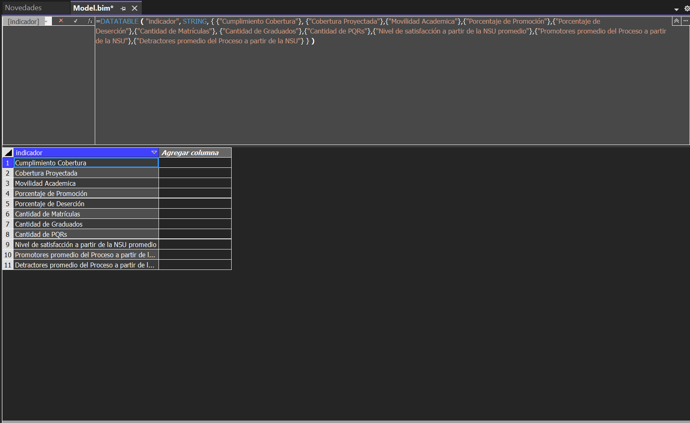

02. TABLAS
Tablas¶
Tabla: Transversal DIM_UNIDAD¶
Descripción General¶
La tabla Transversal DIM_UNIDAD es una dimensión que define las unidades organizacionales o funcionales del sistema. Esta tabla es fundamental para categorizar y segmentar datos relacionados con las actividades y procesos empresariales.

Estructura de la Tabla¶
1. Nombre de la Tabla: Transversal DIM_UNIDAD.
2. Columnas:
- ID_UNIDAD:
- Tipo de Datos:
int64. - Descripción: Identificador único de cada unidad.
- Columna Fuente:
ID_UNIDAD.
- Tipo de Datos:
- UNIDAD:
- Tipo de Datos:
string. - Descripción: Nombre descriptivo de la unidad.
- Columna Fuente:
UNIDAD.
- Tipo de Datos:
Particiones¶
1. Nombre de la Partición: Partition.
2. Vista de Datos: full (carga completa de los datos de la tabla).
3. Fuente:
- Tipo:
m. - Expresión:
let Source = #"SQL/10 5 21 29\bi;DWH_COMFENALCO", Transversal_DIM_UNIDAD = Source{[Schema="Transversal", Item="DIM_UNIDAD"]}[Data] in Transversal_DIM_UNIDAD
Propósito¶
La dimensión DIM_UNIDAD se utiliza para:
- Proveer una referencia jerárquica o categórica para análisis y segmentaciones.
- Establecer relaciones con otras tablas, como hechos o medidas, en el modelo semántico del cubo.
Relación con el Cubo¶
Esta tabla se integra con otras dimensiones y hechos para calcular medidas como: - Número de actividades por unidad. - Rendimiento de procesos específicos.
Entendido, aquí está la documentación ajustada con la numeración en negritas dentro del formato Markdown:
Tabla: Transversal DIM_TIEMPO_MENSUAL¶
Descripción General¶
La tabla Transversal DIM_TIEMPO_MENSUAL es una dimensión de tiempo que permite segmentar los datos en diferentes niveles temporales, como días, semanas, meses, bimestres, trimestres, cuatrimestres, semestres y años. Proporciona una estructura detallada para análisis cronológicos.

Estructura de la Tabla¶
| Columna | Tipo de Datos | Columna Fuente |
|---|---|---|
| ID_FECHA | int64 | ID_FECHA |
| FECHA | dateTime | FECHA |
| DESC_FECHA | string | DESC_FECHA |
| ID_SEMANA | int64 | ID_SEMANA |
| DESC_SEMANA | string | DESC_SEMANA |
| ID_NO_MES | int64 | ID_NO_MES |
| DESC_NO_MES | string | DESC_NO_MES |
| ID_MES | int64 | ID_MES |
| DESC_MES | string | DESC_MES |
| DESC_MES_CORTA | string | DESC_MES_CORTA |
| ID_BIMESTRE | int64 | ID_BIMESTRE |
| DESC_BIMESTRE | string | DESC_BIMESTRE |
| ID_TRIMESTRE | int64 | ID_TRIMESTRE |
| DESC_TRIMESTRE | string | DESC_TRIMESTRE |
| ID_CUATRIMESTRE | int64 | ID_CUATRIMESTRE |
| DESC_CUATRIMESTRE | string | DESC_CUATRIMESTRE |
| ID_SEMESTRE | int64 | ID_SEMESTRE |
| DESC_SEMESTRE | string | DESC_SEMESTRE |
| ID_ANIO | int64 | ID_ANIO |
| ID_ANIO_ANT | int64 | ID_ANIO_ANT |
| NUM_DIA_SEMANA | int64 | NUM_DIA_SEMANA |
| FESTIVO | int64 | FESTIVO |
| FECHA_CORTA | dateTime | FECHA_CORTA |
Particiones¶
1. Nombre de la Partición: Partition.
2. Vista de Datos: full (carga completa de los datos).
3. Fuente:
- Tipo:
m. - Expresión:
let Source = #"SQL/10 5 21 29\bi;DWH_COMFENALCO", Transversal_DIM_TIEMPO_MENSUAL = Source{[Schema="Transversal",Item="DIM_TIEMPO_MENSUAL"]}[Data] in Transversal_DIM_TIEMPO_MENSUAL
Propósito¶
La dimensión DIM_TIEMPO_MENSUAL se utiliza para:
- Segmentar datos en intervalos de tiempo específicos.
- Proporcionar jerarquías temporales para análisis (día, semana, mes, bimestre, trimestre, cuatrimestre, semestre y año).
- Relacionar datos temporales con otras dimensiones y hechos para análisis detallados.
Tabla: Transversal DIM_CATEGORIA¶
Descripción General¶
La tabla Transversal DIM_CATEGORIA define las categorías utilizadas en el modelo para clasificar datos. Esta dimensión permite agrupar y segmentar información relacionada con diferentes áreas del sistema.

Estructura de la Tabla¶
| Columna | Tipo de Datos | Columna Fuente |
|---|---|---|
| COD_CATEGORIA | string | COD_CATEGORIA |
| DESCRIPCION | string | DESCRIPCION |
Particiones¶
1. Nombre de la Partición: Partition.
2. Vista de Datos: full (carga completa de los datos).
3. Fuente:
- Tipo:
m. - Expresión:
let Source = #"SQL/10 5 21 29\bi;DWH_COMFENALCO", Transversal_DIM_CATEGORIA = Source{[Schema="Transversal",Item="DIM_CATEGORIA"]}[Data] in Transversal_DIM_CATEGORIA
Propósito¶
La dimensión DIM_CATEGORIA se utiliza para:
- Clasificar información en grupos o categorías predefinidas.
- Relacionar datos categorizados con otras dimensiones y hechos para análisis más detallados.
- Facilitar la segmentación de datos en reportes y consultas.
Tabla: Transversal FACT_ACTIVIDADES¶
Descripción General¶
La tabla Transversal FACT_ACTIVIDADES registra información detallada sobre las actividades realizadas por afiliados y empresas, incluyendo datos demográficos, económicos, y sobre aportes. Esta tabla es clave para el análisis de hechos y métricas relacionadas con las actividades.
Estructura de la Tabla¶
| Columna | Tipo de Datos | Columna Fuente |
|---|---|---|
| PARTNER | string | PARTNER |
| ID_EMPRESA | int64 | ID_EMPRESA |
| ID_AFILIADO | int64 | ID_AFILIADO |
| ID_TIPO_AFILIADO | int64 | ID_TIPO_AFILIADO |
| TIPO_AFILIADO | string | TIPO_AFILIADO |
| ID_CATEGORIA | int64 | ID_CATEGORIA |
| FECHA_AFILIACION | dateTime | FECHA_AFILIACION |
| FECHA_RETIRO | dateTime | FECHA_RETIRO |
| ID_GENERO | int64 | ID_GENERO |
| ID_ESTADO_CIVIL | int64 | ID_ESTADO_CIVIL |
| ID_PERTENENCIA_ETNICA | int64 | ID_PERTENENCIA_ETNICA |
| ID_FACTOR_VULNERABILIDAD | int64 | ID_FACTOR_VULNERABILIDAD |
| ESTRATO | int64 | ESTRATO |
| ID_CIUDAD | int64 | ID_CIUDAD |
| SALARIO_BASICO | double | SALARIO_BASICO |
| FECHA_MENSUAL | dateTime | FECHA_MENSUAL |
| ID_FECHA | int64 | ID_FECHA |
| ID_UNIDAD | int64 | ID_UNIDAD |
| ESTADOREGISTRO | string | ESTADOREGISTRO |
| PARTNER_AFILIADO | string | PARTNER_AFILIADO |
| PARTNER_EMPRESA | string | PARTNER_EMPRESA |
| TIPO_POBLACION | string | TIPO_POBLACION |
| ACTIVIDAD | string | ACTIVIDAD |
| TOTAL_APORTES | double | TOTAL_APORTES |
| NUMERO_APORTES | int64 | NUMERO_APORTES |
Particiones¶
1. Nombre de la Partición: Partition.
2. Vista de Datos: full (carga completa de los datos).
3. Fuente:
- Tipo:
m. - Expresión:
let Source = #"SQL/10 5 21 29\bi;DWH_COMFENALCO", Transversal_FACT_ACTIVIDADES = Source{[Schema="Transversal",Item="FACT_ACTIVIDADES"]}[Data] in Transversal_FACT_ACTIVIDADES
Propósito¶
La tabla FACT_ACTIVIDADES se utiliza para:
- Analizar información demográfica, económica y de aportes de afiliados y empresas.
- Calcular métricas relacionadas con actividades y aportes.
- Proveer datos detallados para informes y análisis multidimensionales.
Tabla: Transversal FACT_PERSONAL¶
Descripción General¶
La tabla Transversal FACT_PERSONAL almacena información relacionada con el personal, sus asignaciones y las horas contratadas. Es útil para el análisis de recursos humanos y la planificación operativa.
Estructura de la Tabla¶
| Columna | Tipo de Datos | Columna Fuente |
|---|---|---|
| ID_FECHA | int64 | ID_FECHA |
| ID_PERSONAL | int64 | ID_PERSONAL |
| NOMBRE | string | NOMBRE |
| CONCEPTO | string | CONCEPTO |
| DESCRIPCION | string | DESCRIPCION |
| FECHA_FIN | dateTime | FECHA_FIN |
| HORAS_CONTRATADAS_MENSUAL | int64 | HORAS_CONTRATADAS_MENSUAL |
| ID_UNIDAD | int64 | ID_UNIDAD |
Particiones¶
1. Nombre de la Partición: Partition.
2. Vista de Datos: full (carga completa de los datos).
3. Fuente:
- Tipo:
m. - Expresión:
let Source = #"SQL/10 5 21 29\bi;DWH_COMFENALCO", Transversal_FACT_PERSONAL = Source{[Schema="Transversal",Item="FACT_PERSONAL"]}[Data] in Transversal_FACT_PERSONAL
Propósito¶
La tabla FACT_PERSONAL se utiliza para:
- Analizar las asignaciones y contratos del personal.
- Monitorear las horas contratadas mensualmente.
- Relacionar los datos del personal con otras dimensiones para informes y planificación estratégica.
Tabla: Transversal FACT_FINANCIERA¶
Descripción General¶
La tabla Transversal FACT_FINANCIERA contiene información detallada sobre los datos financieros de la organización, incluyendo cuentas, ingresos, gastos, y resultados. Es una fuente fundamental para el análisis financiero y la generación de informes.
Estructura de la Tabla¶
| Columna | Tipo de Datos | Columna Fuente |
|---|---|---|
| ID_FECHA | int64 | ID_FECHA |
| ID_ANIO | int64 | ID_ANIO |
| ID_MES | int64 | ID_MES |
| ID_CEBE | string | ID_CEBE |
| CEBE | string | CEBE |
| DESCRIPCION_CEBE | string | DESCRIPCION_CEBE |
| DEPARTAMENTO | string | DEPARTAMENTO |
| AREA | string | AREA |
| SUBAREA | string | SUBAREA |
| SEGMENTO | string | SEGMENTO |
| DESCRIPCION_SEGMENTO | string | DESCRIPCION_SEGMENTO |
| CODIGO_SSF | int64 | CODIGO_SSF |
| NOMBRE_SSF | string | NOMBRE_SSF |
| ID_CUENTA | string | ID_CUENTA |
| CUENTA | string | CUENTA |
| CUENTA_HOMOLOGA | string | CUENTA_HOMOLOGA |
| DESCRIPCION | string | DESCRIPCION |
| TIPO_CUENTA | string | TIPO_CUENTA |
| TIPO_OPERACION | string | TIPO_OPERACION |
| GRUPO_CUENTA | string | GRUPO_CUENTA |
| SUBGRUPO_CUENTA | string | SUBGRUPO_CUENTA |
| GRUPO_OPERACION | string | GRUPO_OPERACION |
| CUENTA_SSF | string | CUENTA_SSF |
| DESCRIPCION_SSF | string | DESCRIPCION_SSF |
| CUENTA_DESCRIPCION | string | CUENTA_DESCRIPCION |
| CUENTA_DESCRIPCION_SSF | string | CUENTA_DESCRIPCION_SSF |
| SIGNO_INGRESOS | int64 | SIGNO_INGRESOS |
| CLASIFICACION | int64 | CLASIFICACION |
| SEGMENT | string | SEGMENT |
| IMPORTE | int64 | IMPORTE |
| INGRESOS | int64 | INGRESOS |
| INGRESOS_OPERACIONALES | int64 | INGRESOS_OPERACIONALES |
| GASTOS | int64 | GASTOS |
| GASTOS_OPERACIONALES | int64 | GASTOS_OPERACIONALES |
| GASTOS_OPERACIONALES_ADMIN | int64 | GASTOS_OPERACIONALES_ADMIN |
| RESULTADO_EJERCICIO | int64 | RESULTADO_EJERCICIO |
| COSTOS | int64 | COSTOS |
| ACTIVO | int64 | ACTIVO |
| PASIVO | int64 | PASIVO |
| PATRIMONIO | int64 | PATRIMONIO |
| GASTOS_CON_DISTRIBUCION | int64 | GASTOS_CON_DISTRIBUCION |
| GASTOS_SIN_DISTRIBUCION | int64 | GASTOS_SIN_DISTRIBUCION |
Particiones¶
1. Nombre de la Partición: Partition.
2. Vista de Datos: full (carga completa de los datos).
3. Fuente:
- Tipo:
m. - Expresión:
let Source = #"SQL/10 5 21 29\bi;DWH_COMFENALCO", Transversal_FACT_FINANCIERA = Source{[Schema="Transversal",Item="FACT_FINANCIERA"]}[Data] in Transversal_FACT_FINANCIERA
Propósito¶
La tabla FACT_FINANCIERA se utiliza para:
- Analizar el comportamiento financiero de la organización.
- Evaluar ingresos, gastos, costos, y resultados financieros.
- Relacionar los datos financieros con otras dimensiones para análisis multidimensionales y generación de informes detallados.
Tabla: Transversal FACT_EVALUACION_DOCENTE¶
Descripción General¶
La tabla Transversal FACT_EVALUACION_DOCENTE almacena información relacionada con las evaluaciones académicas de los docentes, incluyendo calificaciones definitivas, períodos académicos y datos personales. Es clave para el análisis del desempeño docente.
Estructura de la Tabla¶
| Columna | Tipo de Datos | Columna Fuente |
|---|---|---|
| PERIODO_ACADEMICO | string | PERIODO_ACADEMICO |
| ID_UNIDAD | int64 | ID_UNIDAD |
| ID_PERSONAL | int64 | ID_PERSONAL |
| NOMBRE_DOCENTE | string | NOMBRE_DOCENTE |
| CALIFICACION_DEFINITIVA | string | CALIFICACION_DEFINITIVA |
| ID_FECHA | int64 | ID_FECHA |
Particiones¶
1. Nombre de la Partición: Partition.
2. Vista de Datos: full (carga completa de los datos).
3. Fuente:
- Tipo:
m. - Expresión:
let Source = #"SQL/10 5 21 29\bi;DWH_COMFENALCO", Transversal_FACT_EVALUACION_DOCENTE = Source{[Schema="Transversal",Item="FACT_EVALUACION_DOCENTE"]}[Data] in Transversal_FACT_EVALUACION_DOCENTE
Propósito¶
La tabla FACT_EVALUACION_DOCENTE se utiliza para:
- Analizar el desempeño académico de los docentes.
- Generar informes de calificaciones definitivas por período académico.
- Relacionar datos de evaluación docente con otras dimensiones como unidades y fechas.
Tabla: CalculatedTableIndicadores¶
Descripción General¶
La tabla CalculatedTableIndicadores es una tabla calculada que contiene indicadores clave para el análisis y evaluación del rendimiento en diversas áreas, como cobertura, movilidad académica, promoción, deserción, matrículas, graduados, y satisfacción.

Estructura de la Tabla¶
| Columna | Tipo de Datos | Columna Fuente |
|---|---|---|
| indicador | string (calculada) | [indicador] |
Particiones¶
1. Nombre de la Partición: CalculatedTable 1.
2. Fuente:
- Tipo:
calculated. - Expresión:
DATATABLE ( "indicador", STRING, { {"Cumplimiento Cobertura"}, {"Cobertura Proyectada"}, {"Movilidad Academica"}, {"Porcentaje de Promoción"}, {"Porcentaje de Deserción"}, {"Cantidad de Matrículas"}, {"Cantidad de Graduados"}, {"Cantidad de PQRs"}, {"Nivel de satisfacción a partir de la NSU promedio"}, {"Promotores promedio del Proceso a partir de la NSU"}, {"Detractores promedio del Proceso a partir de la NSU"} } )
Propósito¶
La tabla CalculatedTableIndicadores se utiliza para:
- Listar y categorizar indicadores clave para el análisis.
- Servir como base para reportes y consultas específicas relacionadas con la evaluación del desempeño.
- Proveer una visión consolidada de los indicadores más relevantes para la organización.
Relaciones del Modelo¶
Descripción General¶
Las relaciones definen cómo las tablas del modelo interactúan entre sí, asegurando la coherencia y la integridad de los datos en los análisis. A continuación se detallan las relaciones establecidas entre las tablas del modelo.
| Nombre | Tabla Origen | Columna Origen | Tabla Destino | Columna Destino |
|---|---|---|---|---|
| e8e7ee5e-2bb5-447c-8a42-40fa4ccf9143 | Transversal FACT_ACTIVIDADES | ID_UNIDAD | Transversal DIM_UNIDAD | ID_UNIDAD |
| 1a8196d0-09e6-4d0c-9f29-4a8d0ff4ee13 | Transversal FACT_ACTIVIDADES | ID_CATEGORIA | Transversal DIM_CATEGORIA | COD_CATEGORIA |
| e4a99626-9ef6-4da8-89db-664ec2a6d8c8 | Transversal FACT_ACTIVIDADES | ID_FECHA | Transversal DIM_TIEMPO_MENSUAL | ID_FECHA |
| 395ef55c-3800-4448-bc48-46690276bd39 | Transversal FACT_PERSONAL | ID_FECHA | Transversal DIM_TIEMPO_MENSUAL | ID_FECHA |
| cdfe13d4-3917-431a-b0c9-b496df147a20 | Transversal FACT_PERSONAL | ID_UNIDAD | Transversal DIM_UNIDAD | ID_UNIDAD |
| a8efdf32-e907-42ab-a950-937906c7b167 | Transversal FACT_EVALUACION_DOCENTE | ID_UNIDAD | Transversal DIM_UNIDAD | ID_UNIDAD |
| 632bc53c-67b6-4634-82f9-8adbfc71e691 | Transversal FACT_EVALUACION_DOCENTE | ID_FECHA | Transversal DIM_TIEMPO_MENSUAL | ID_FECHA |
| 7246e8e1-e2c3-4a17-89eb-c077680b0f6b | Transversal FACT_FINANCIERA | ID_FECHA | Transversal DIM_TIEMPO_MENSUAL | ID_FECHA |
Diagrama de Relaciones y Tablas¶
A continuación, se presenta el diagrama de relaciones del modelo utilizando formato Mermaid para visualizar las conexiones entre tablas y sus relaciones:
graph TD
FACT_ACTIVIDADES[Transversal FACT_ACTIVIDADES]
FACT_PERSONAL[Transversal FACT_PERSONAL]
FACT_FINANCIERA[Transversal FACT_FINANCIERA]
FACT_EVALUACION_DOCENTE[Transversal FACT_EVALUACION_DOCENTE]
DIM_UNIDAD[Transversal DIM_UNIDAD]
DIM_CATEGORIA[Transversal DIM_CATEGORIA]
DIM_TIEMPO[Transversal DIM_TIEMPO_MENSUAL]
FACT_ACTIVIDADES --> DIM_UNIDAD[ID_UNIDAD]
FACT_ACTIVIDADES --> DIM_CATEGORIA[ID_CATEGORIA]
FACT_ACTIVIDADES --> DIM_TIEMPO[ID_FECHA]
FACT_PERSONAL --> DIM_TIEMPO[ID_FECHA]
FACT_PERSONAL --> DIM_UNIDAD[ID_UNIDAD]
FACT_FINANCIERA --> DIM_TIEMPO[ID_FECHA]
FACT_EVALUACION_DOCENTE --> DIM_UNIDAD[ID_UNIDAD]
FACT_EVALUACION_DOCENTE --> DIM_TIEMPO[ID_FECHA]Explicación del Diagrama¶
-
Tablas de Hechos:
- FACT_ACTIVIDADES: Conecta con DIM_UNIDAD, DIM_CATEGORIA, y DIM_TIEMPO_MENSUAL.
- FACT_PERSONAL: Relacionada con DIM_UNIDAD y DIM_TIEMPO_MENSUAL.
- FACT_FINANCIERA: Conecta con DIM_TIEMPO_MENSUAL.
- FACT_EVALUACION_DOCENTE: Conecta con DIM_UNIDAD y DIM_TIEMPO_MENSUAL.
-
Tablas de Dimensiones:
- DIM_UNIDAD: Relaciona hechos mediante el campo
ID_UNIDAD. - DIM_CATEGORIA: Relaciona hechos mediante el campo
ID_CATEGORIA. - DIM_TIEMPO_MENSUAL: Relaciona hechos mediante el campo
ID_FECHA.
- DIM_UNIDAD: Relaciona hechos mediante el campo
Propósito de las Relaciones¶
-
Conexión entre hechos y dimensiones: Permitir que las tablas de hechos como FACT_ACTIVIDADES, FACT_PERSONAL, FACT_FINANCIERA y FACT_EVALUACION_DOCENTE se relacionen directamente con sus dimensiones correspondientes.
-
Integridad de Datos: Garantizar que los datos en el modelo estén relacionados de manera lógica y consistente.
-
Facilitar el Análisis Multidimensional: Habilitar análisis por jerarquías y categorías, como tiempo, unidad, y categoría.